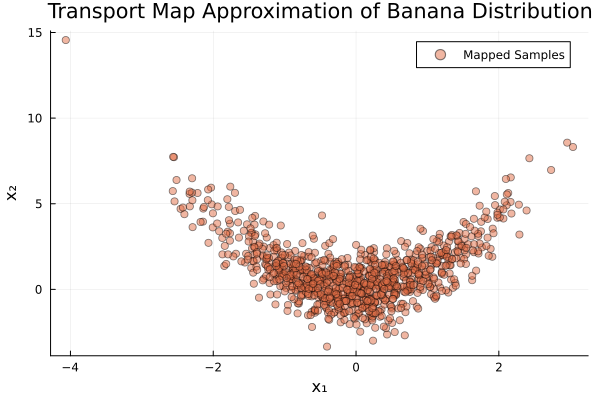

Banana Distribution Example
This example demonstrates how to use TransportMaps.jl to approximate a "banana" distribution using polynomial transport maps.
The banana distribution is a common test case in transport map literature [1], defined as a standard normal in the first dimension and a normal distribution centered at x₁² in the second dimension. This example showcases the effectiveness of triangular transport maps for capturing nonlinear dependencies [3].
We start with the necessary packages:
using TransportMaps
using Distributions
using PlotsCreating the Transport Map
We start by creating a 2-dimensional polynomial transport map with degree 2 and a Softplus rectifier function.
M = PolynomialMap(2, 2, Softplus())PolynomialMap:
Dimensions: 2
Total coefficients: 9
Maximum degree: 2
Basis: Hermite
Rectifier: Softplus
Components:
Component 1: 3 basis functions
Component 2: 6 basis functions
Coefficients: min=2.3341953954e-313, max=6.94221773954435e-310, mean=6.17111166953745e-310
Setting up Quadrature
For optimization, we need to specify quadrature weights. Here we use Gauss-Hermite quadrature with 3 points per dimension.
quadrature = GaussHermiteWeights(3, 2)GaussHermiteWeights:
Number of points: 9
Dimensions: 2
Quadrature type: Tensor product Gauss-Hermite
Reference measure: Standard Gaussian
Weight range: [0.02777777777777786, 0.44444444444444353]
Weight sum: 0.9999999999999997
Points:
[-1.7320508075688776, -1.7320508075688776] → weight: 0.02777777777777786
[-1.2560739669470201e-15, -1.7320508075688776] → weight: 0.11111111111111116
[1.7320508075688776, -1.7320508075688776] → weight: 0.02777777777777786
[-1.7320508075688776, -1.2560739669470201e-15] → weight: 0.11111111111111116
[-1.2560739669470201e-15, -1.2560739669470201e-15] → weight: 0.44444444444444353
[1.7320508075688776, -1.2560739669470201e-15] → weight: 0.11111111111111116
[-1.7320508075688776, 1.7320508075688776] → weight: 0.02777777777777786
[-1.2560739669470201e-15, 1.7320508075688776] → weight: 0.11111111111111116
[1.7320508075688776, 1.7320508075688776] → weight: 0.02777777777777786
Defining the Target Density
The banana distribution has the density:
\[p(x) = \phi(x_1) \cdot \phi(x_2 - x_1^2)\]
where $\phi$ is the standard normal PDF.
target_density(x) = pdf(Normal(), x[1]) * pdf(Normal(), x[2] - x[1]^2)target_density (generic function with 1 method)Create a TargetDensity object for optimization
target = TargetDensity(target_density, :auto_diff)TargetDensity(gradient_type=:auto_diff)Optimizing the Map
Now we optimize the map coefficients to approximate the target density:
@time res = optimize!(M, target, quadrature)
println("Optimization result: ", res) 3.850001 seconds (9.07 M allocations: 471.138 MiB, 2.57% gc time, 98.52% compilation time)
Optimization result: * Status: success
* Candidate solution
Final objective value: 2.837877e+00
* Found with
Algorithm: L-BFGS
* Convergence measures
|x - x'| = 1.43e-06 ≰ 0.0e+00
|x - x'|/|x'| = 1.43e-06 ≰ 0.0e+00
|f(x) - f(x')| = 2.94e-12 ≰ 0.0e+00
|f(x) - f(x')|/|f(x')| = 1.04e-12 ≰ 0.0e+00
|g(x)| = 3.45e-09 ≤ 1.0e-08
* Work counters
Seconds run: 0 (vs limit Inf)
Iterations: 12
f(x) calls: 33
∇f(x) calls: 33Testing the Map
Let's generate some samples from the standard normal distribution and map them through our optimized transport map:
samples_z = randn(1000, 2)1000×2 Matrix{Float64}:
0.376022 -0.344882
-0.980337 -0.134923
0.719526 -0.0405485
-0.501208 -0.836924
-0.163753 1.675
-1.7344 -0.566834
-0.834579 -1.78946
2.19841 -0.66467
1.54518 0.0239496
0.672731 -0.502807
⋮
2.41862 -2.15947
-1.59877 -0.0556275
0.737209 -0.248298
-1.97563 0.793508
0.580645 0.711574
0.0632622 0.818164
-0.691945 -0.281526
0.137737 -0.369406
-0.816097 1.08899Map the samples through our transport map:
mapped_samples = reduce(vcat, [evaluate(M, x)' for x in eachrow(samples_z)])1000×2 Matrix{Float64}:
0.376022 -0.203489
-0.980337 0.826138
0.719526 0.477169
-0.501208 -0.585715
-0.163753 1.70182
-1.7344 2.44132
-0.834579 -1.09293
2.19841 4.16832
1.54518 2.41153
0.672731 -0.0502395
⋮
2.41862 3.69025
-1.59877 2.50045
0.737209 0.295179
-1.97563 4.69661
0.580645 1.04872
0.0632622 0.822166
-0.691945 0.197262
0.137737 -0.350434
-0.816097 1.755Visualizing Results
Let's create a scatter plot of the mapped samples to see how well our transport map approximates the banana distribution:
scatter(mapped_samples[:, 1], mapped_samples[:, 2],
label="Mapped Samples", alpha=0.5, color=2,
title="Transport Map Approximation of Banana Distribution",
xlabel="x₁", ylabel="x₂")GKS: cannot open display - headless operation mode active
Quality Assessment
We can assess the quality of our approximation using the variance diagnostic:
var_diag = variance_diagnostic(M, target, samples_z)
println("Variance Diagnostic: ", var_diag)Variance Diagnostic: 5.2073024259630455e-18Interpretation
The variance diagnostic provides a measure of how well the transport map approximates the target distribution. Lower values indicate better approximation.
The scatter plot should show the characteristic "banana" shape, with samples curved according to the relationship x₂ ≈ x₁².
Further Experiments
You can experiment with:
- Different polynomial degrees (see [3] for monotone map theory)
- Different rectifier functions (
IdentityRectifier(),ShiftedELU()) - Different quadrature methods (
MonteCarloWeights,LatinHypercubeWeights) - More quadrature points for higher accuracy